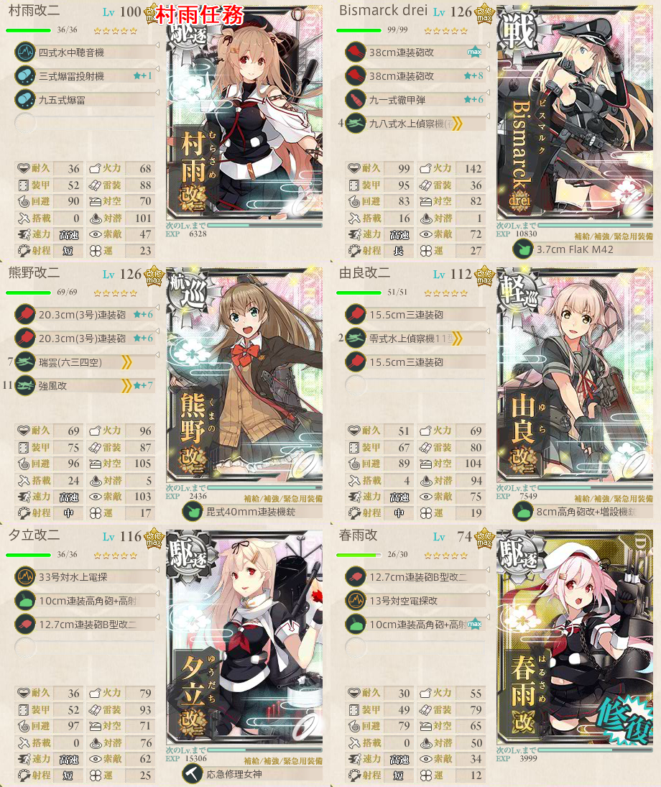

【艦これ】5-3 サブ島沖海域 第一次サーモン沖海戦
5-3 サブ島沖海域攻略メモ
夜戦が続くので、突破のためにキラ付けを
編成
- 高速戦艦２、重巡２、駆逐２
- 高速戦艦１、重巡１、軽巡２、駆逐２
IからKへのルート固定のため、駆逐２は必須
戦艦１、重巡１に抑えるとDからIに行きやすい（ただし、ボス戦の火力/装甲が不安になる）
装備
- ボスに潜水艦が交じる可能性があるため、朝潮改二丁等、先制爆雷できる駆逐艦にソナー＋爆雷
- ボス戦で航空優勢はまず厳しいので、昼連撃用の水偵は外して良い
- 練度を上げきった水戦ガン積みの航巡なりイタリア重巡を用意すれば不可能ではない
- 重巡系2の編成であれば主砲２ずつを残した状態で可能ではある
- ただし、水戦のみでは昼連撃できないことに注意
- ボス戦のランダム編成次第でもある
任務
精鋭「四水戦」、南方海域に展開せよ！

- 村雨改二任務
- 旗艦は村雨改二固定
- 僚艦に由良改二、夕立改二、春雨改、五月雨改、秋月改の中から3隻
出撃ログ
| 回数 | 編成 | ルート | 戦果 |
|---|---|---|---|
| 1 | Pola Bismarck 霧島 妙高 朝潮 照月 | ACD | Bismarck大破 |
| 2 | Pola Bismarck 霧島 足柄 朝潮 照月 | ACD | Bismarck大破 |
| 3 | Pola Bismarck 霧島 足柄 朝潮 照月 | AC | Bismarck大破 |
| 4 | Pola Bismarck 霧島 足柄 朝潮 照月 | ACDIK | S勝利（筑摩） |
| 5 | Zara Bismarck 霧島 妙高 朝潮 照月 | ACDE | E反れ |
| 6 | Zara Bismarck 能代 鬼怒 朝潮 照月 | ACDIK | A勝利（隼鷹） |
| 7 | Zara Bismarck 能代 鬼怒 朝潮 照月 | ACDFGIK | A勝利 |
| 8 | 鈴谷 Bismarck 阿賀野 鬼怒 初月 嵐 | ACD | 鈴谷大破 |
| 9 | 鈴谷 霧島 阿賀野 川内 初月 嵐 | ACD | 鈴谷大破 |
| 10 | 鈴谷 Bismarck 阿賀野 川内 初月 嵐 | AC | 初月大破 |
| 11 | 鈴谷 Bismarck 阿賀野 川内 叢雲 嵐 | AC | 川内、嵐大破 |
| 12 | 鈴谷 Bismarck 阿賀野 能代 叢雲 Libeccio | ACDE | E反れ |
| 13 | 鈴谷 Bismarck 川内 能代 照月 Libeccio | ACDIK | C敗北 |
| 14 | 鈴谷 Bismarck 川内 能代 照月 Libeccio | ACDFGIK | A勝利 |
敵編成
| マス | 編成 | 備考 |
|---|---|---|
| C | 戦艦１ 重巡２ 雷巡１ 駆逐２ | 夜戦 |
| 軽巡１ 重巡２ 雷巡２ 駆逐１ | ||
| D | 戦艦２ 重巡１ 軽巡１ 駆逐２ | 夜戦 |
| K | ヲ級 戦姫 重巡２ 駆逐２ | ボス |